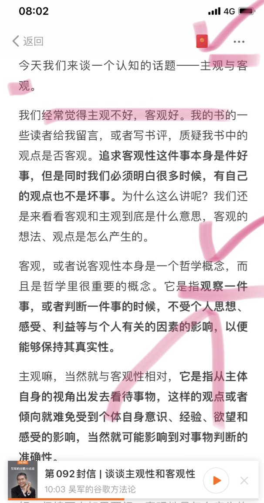

[啟發] 主觀不比客觀差 | Subjective is more Valuable
Status: Published
今天來談一個知名的話題— 主觀與客觀
我們經常覺得主觀不好，客觀好。當然也有很多的人會質疑有聲書觀點是否客觀。追求客觀性這件事本身是好，但是同時我們必須明白很多時候，有自已的觀點也不是件壞事。
客觀就是好，主觀就是不好？
日常生活中談到主客觀的議題。
如果客觀性的定義本身都帶有一定的主觀性，那麼強調客觀就是好，主觀就是不好，似乎有點站不住腳
https://keydifferences.com/difference-between-objective-and-subjective.html
為什麼這麼講呢？我們先來看看主觀和客觀的定義。
二者本身是一個哲學概念：
客觀
先說客觀—它指觀察一件事，或者判斷一件事情的時候，不受個人思想、感受、利益等與個人有關的因素影響，以便能多保持其真實性。
主觀
主觀嘛，當然與客觀性相對。它指從主體自身的視角出發去看待事物，這樣的觀點或者傾向就難免受到個人意識、經驗、慾望和感受的影響，當然可能影響到對事物判斷的准確性。
以我在台上當講師的經驗來看，我曾經問過同學們，你們喜歡多做一些Lab(實驗)或是聽我講一些實際案例呢？就有同學希望聽到更多的實例，如此可以強化對新產品的認識，也可以縮短上手的時間成本。
從歷史看看主客觀
歷史學者則因為看到了歷史上太多好的初衷在多年後帶來的壞的結果，對很多科學的發明都非常謹慎和保守。這個問題上，並非科學家有更多的專業和知識，講話就有更大的發言權。相反的歷史學者的忠告常常是要聽的。
學歷史是常握一種客觀公允，而且能夠超出時代的看問題方法，用更寬更廣的角度來檢視。
產品的客觀性
作者吳軍十多年前在Google負責搜尋品質相關的項目，專案的目標是把品質做好。不過什麼是好的品質？內部就有些爭議，但組識有一個共識，就是搜索結果的排名要客觀，不能像一些搜索引擎那樣，誰給多少錢，就給誰排在前面
在 Google工作幾年後，開始深入思考。吳軍對主觀性和客觀性的思考就源於那個時期的工作。提出在Google工作時期發生一些故事對主、客觀哲學有更深入的看法。
他和大家一樣從中學開始接觸馬克思唯物主義的世界觀，是堅定的反對主對支持客觀的人。
Google排名官司
第一個故事是 Google是世界上永遠的樹大招風，當Google上市後就有一些小公司告Google，說Google的排名不公平，影響他們的流量。Google方面沒有向法官說明自已的排名演算法多麼客觀，反而是引用了美國憲法的第一修正案，即關於言論自由。也就是說Google不需要把排名做到絕對客觀公平，它還是可以表達自已的意願，而排名就是它的主觀意願的表達
這件事你聽起來可能學得很悖論(矛盾)，以追求客觀性為目標的Google，打贏司反而要靠調強主觀性
http://www.massaffectadvertising.com/seo-and-page-rank-which-is-more-important/
Google v.s Morgan Stanley
第二個故事是Google有幾個工程師和摩根士丹利(Morgan Stanley)和高盛集團(Goldman Sachs Group Inc.)打擂台，看誰的管理資本的回報高，最後的結果是Google工程師贏了。畢竟他們的工程素質跟Google比起來差甚多，因此要做到客觀判斷市場，並不容易。
這此事件帶來的收獲是，發現主觀的看法很多時候比客觀更重要。作者那時候開始定閱<華爾街日報>，因為除了那些所謂的客觀新聞之外，還有很強烈主觀的專欄。
專欄價值來自主觀論述
為什麼主觀的意見比客觀的事實更重要呢？這裡有二個原因，第一：那些所謂客觀的事情其實不過是按照某一個標準把主觀性濾除的結論，而那個標準的本身也是一種主觀。其次，
真正的真知灼見都在所謂主觀性的看法中，這一點尤其重要。
<華爾街日報>中有各種帶有主觀色彩的專欄文章，它們可能帶有偏見
但是它們代表一類人的看法。同時，你也可能讀到截然相反的觀點。
但你可以把這些觀點綜合起來，自已好好分析，你就不難得到很多深刻的看法，思考那些客觀描述，通常是完全正確，又完全無用 。
其實人的主觀性是區別於動物的一個固有屬性。動物有本能，但是缺乏主觀意識，比如說一群動物的想法，常常是一樣的，但是人類不同，這原本就是應該是人的價值所在
主觀可引導思考
一昧從客觀，會產生一種後果，就是聽不到任何人的主觀意見，自以為是看到了一個客觀的結果，往後的思考都直接定讞。對於任何排名、評判和意見，我的看法是先看看他們的根據，看看他們思考問題的出發點，再審視他們是否說得有道理，也就是說用更寬廣的時空背景去檢視它
因為對主客觀，作者基本的看法是這樣的：
世界上沒有什麼絕對的客觀，因此
人不能偷懶，不過經思考就接受所謂權威客觀的標準
主觀的意見非常重要，我們即要聽主觀的意見，
也要發表自已的主觀看法，而很多所謂的客觀論述不過是重復且不會引起爭議的訊息多聽不同人的意見(主觀)，而不是僅僅相信權性的意見
做出判斷時要做到公平、公正，做事的時候要遵守規則。這項遠比糾結主觀和客觀重要得多
結論：
其實所謂的客觀標準本身又是極其主觀的。現在的我，很喜歡詢問別人的意見，也算是一種QBQ的精神，背後就是了解他真正動機是什麼？得到完整的資訊後，才能換位思考，因此就能有更多的寬容、包容，也能和差異相擁，人生更豁達
對於一般人會擁包客觀的原因，我認為是所見有限，主觀是有所其局限性和不隱定性，那麼就會尋找對全面穩定的觀察方式，就得借助所謂的客觀，也填充自已的知識圈。但不能因為就此結束自已的再進步的機會，所以
客觀不能指導生活，反而恰恰應該是被主觀利用的東西
小秘技：按著拍手可以連拍呦！！客觀就是好，主觀就是不好？
日常生活中談到主客觀的議題。
如果客觀性的定義本身都帶有一定的主觀性，那麼強調客觀就是好，主觀就是不好，似乎有點站不住腳
產品的客觀性
作者在十多年前在Google負責搜尋品質相關的項目，專案的目標是把品質做好。不過什麼是好的品質？內部就有些爭議，但組識有一個共識，就是搜索結果的排名要客觀，不能像一些搜索引擎那樣，誰給多少錢，就給誰排在前面
今天來談一個知名的話題— 主觀與客觀
我們經常覺得主觀不好，客觀好。當然也有很多的人會質疑有聲書觀點是否客觀。追求客觀性這件事本身是好，但是同時我們必須明白很多時候，有自已的觀點也不是壞事。
為什麼這麼講呢？我們先來看看主觀和客觀的定義。二者本身是一個哲學概念：
客觀
先說客觀—它指觀察一件事，或者判斷一件事情的時候，不受個人思想、感受、利益等與個人有關的因素影響，以便能多保持其真實性。
主觀
主觀嘛，當然與客觀性相對，它指從主體自身的視角出發去看待事物，這樣的觀點或者傾向就難免受到個人意識、經驗、慾望和感受的影響，當然可能影響到對事物判斷的准確性。
以我在台上當講師的經驗來看，我曾經問過同學們，你們喜歡多做一些Lab(實驗)或是聽我講一些實際經驗呢？

在 Google工作幾年後，開始深入思考。吳軍對主觀性和客觀性的思考就源於那個時期的工作。作者在Google工作時期發生一些故事對主、客觀哲學有更深入的看法。
他和大家一樣從中學開始接觸唯物主義的世界觀，是堅定的反對主對支持客觀的人。
第一個故事是 Google是世界上永遠的樹大招風，當Google上市後就有一些小公司告Google，說Google的排名不公平，影響他們的流量。Google方面沒有向法官說明自已的排名演算法多麼客觀，反而是引用了美國憲法的第一修正案，即關於論論自由。也就是說Google不需要把排名做到絕對客觀公平，它還是可以表達自已的意願，而排名就是它的主觀意願的表達
這件事你聽起來可能學得很悖論(矛盾)，以追求客觀性為目標的Google，打贏司反而要靠調強主觀性
第二個故事是Google有幾個工程師和摩根士丹利(Morgan Stanley)和高盛集團(Goldman Sachs Group Inc.)打擂台，看誰的管理資本的回報高，最後的結果Google工程師贏了。
這個事件帶來的收獲是，發現主觀的看法很多時候比客觀更重要。吳軍那時候開始定閱<華爾街日報>，因為除了那些所謂的客觀新聞之外，還有很強烈主觀的專欄。
畢竟他們的工程素質跟Google別起來差甚多，因此要做到客觀判斷市場，並不容易
為什麼主觀的意見比客觀的事實更重要呢？這裡有二個原因，第一，那些所謂客觀的事情其實不過是按照某一個標準把主觀性濾除的結，而那個標準的本身是主觀的。
其次，真正的真知灼見都在所謂主觀性的看法中，這一點尤其重要。
在<華爾街日報>中有各種帶有主觀色彩的專欄文章，它們可能帶有偏見，但是它們代表一類人的看法。同時，你也可能讀到截然相反的觀點。
但你可以把這些觀點綜合起來，自已好好分析，你就不難得到很多深刻的看法，思考那些客觀描述，通常是完全正確，又完全無用 。
其實人的主觀性是區別於動物的一個固有屬性。動物有本能，但是缺乏主觀意識，比如說一群動物的想法，常常是一樣的，但是人類不同，這原本就是應該是人的價值所在
一昧從客觀，會產生一種後果。最怕聽不到任何人的主觀意見，自以為是看到了一個客的結果。對於任何排名、評判和意見，我的看法是先看看他們的根據，看看他們思考問題的出發點，再審視他們是否說得有道理
因為對主客觀，我基本的看法是這樣的：
世界上沒有什麼絕對的客觀，因此
人不能偷懶，不過經思考就接受所謂權威客觀的標準
主觀的意見非常重要的，我們即要聽主觀的意見，也要發表自已的主觀看法，而很多所謂的客觀論述不過是重復且不會引起爭議的訊息
多聽不同人的意見(主觀)，而不是僅僅相信權感的意見
作出判斷時要做到公平、公正，做事的時候要遵守規則。這項遠比糾結主觀和客觀重要得多
結論：
其實所謂的客觀標準本身又是極其主觀的。現在的我，很喜歡詢問別人的意見，也算是一種QBQ的精神，背後就是了解他真正動機是什麼？
從歷史看看主客觀
歷史學者則因為看到了歷史上太多好的初衷在多年後帶來的壞的結果，對多很多科學發明都非常謹慎和保守。這個問題上，並非科學家有更多的專業和知識，講話就有更大的發言權。相反的歷史學者的忠告常常是要聽的。
學歷史是常握一種客觀公允，而且能夠超出時代的看問題方法。